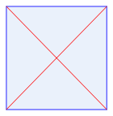
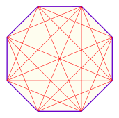
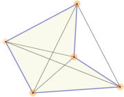

Diagonals of Polygons
|  |  |
| A square has 2 diagonals |
An octagon has 20 diagonals |
A polygon's diagonals are line segments from one corner to another (but not the edges).
The number of diagonals of an n-sided polygon is:
n(n − 3) / 2
Examples:
- a square (or any quadrilateral) has 4(4−3)/2 = 4×1/2 = 2 diagonals
- an octagon has 8(8−3)/2 = 8×5/2 = 20 diagonals.
- a triangle has 3(3−3)/2 = 3×0/2 = 0 diagonals.
Try it Yourself:
|  | A diagonal can actually be outside the polygon, which happens with some concave polygons. |